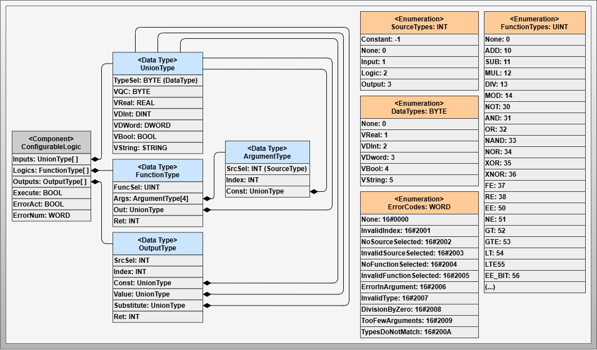
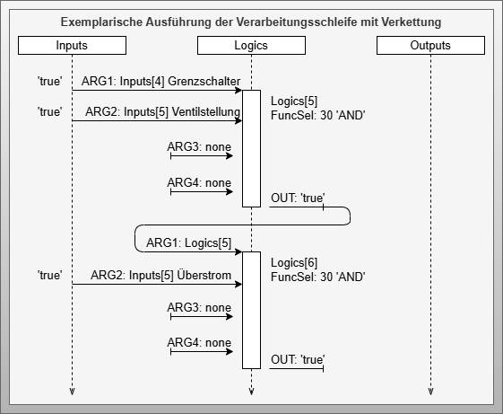
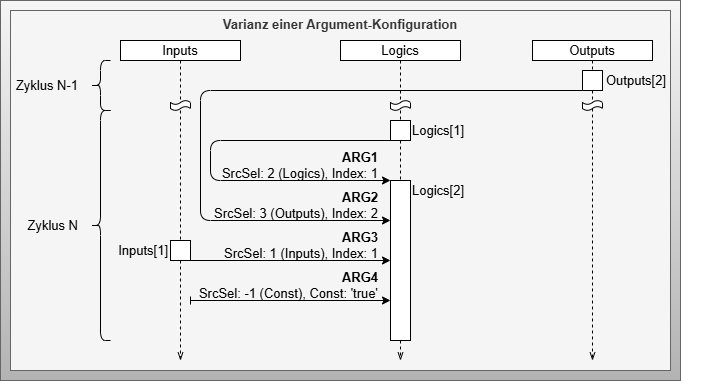
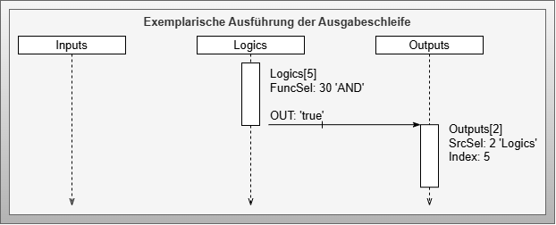
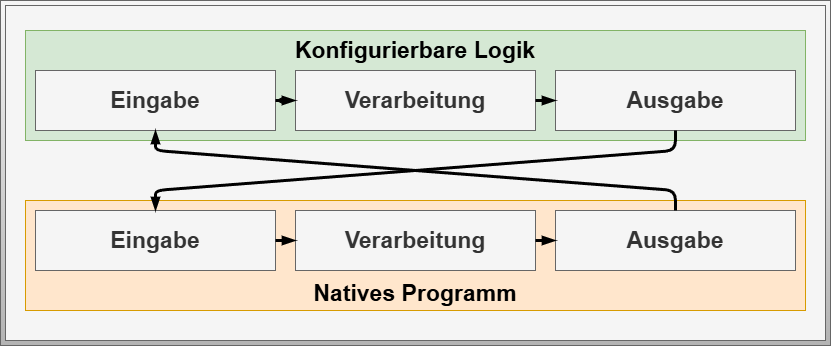

Configurable Logic
Artifact - Configurable Logic
Artifact Factsheet
| Fact Sheet | |
|---|---|
| Name | Configurable Logic |
| Artifact Type | Design Pattern |
| Target Users | Software Architects, PLC Programmers |
| Objective | This artifact defines the models and functional features of configurable logic, a central element of an active choreography participant. It enables the execution of configurable behavioral rules that determine a participant's role within the choreography. The software structures and their interactions are described in detail. |
Relevant Publications
The contents of this section have been published in [SFB+21], [SBM+22], [SFB+23], [StMa21], [StMa22], and [Stu23].
Artifact Description
The Configurable Logic design pattern follows an execution principle similar to a programmable logic controller (PLC). It has an input side that bundles information from the native program or provided by configurable communication. This information, along with known data within the configurable logic, is processed in a logic list with configurable function elements. The output side provides necessary information for influencing the native control program or transmission to external participants, utilizing all known information within the configurable logic (input list) and processing results (logic list).
Artifact Building Blocks
The Configuralbe Logic represents an implementation related design pattern which specifies the core of information processing and enables influence on native control programs and configurable behavior based on internal and external information.

The Configurable Logic design pattern consists of one component, four data types, and four enumerations:
Component - Configurable Logic
The Configurable Logic component implements configurable input-processing-output functionality. It uses a list of Inputs, Logics and Outputs to implement the input-processing-output pattern in a configurable manner.
Data Type - UnionType
The UnionType data type represents information with different data types, as the type of information is not yet determined at control program compilation time. Variables are defined for data types REAL, DINT, DWORD, BOOL, and STRING with prefix V. The VQC variable contains the Quality Code, and TypeSel* indicates the currently valid data type.
Enumeration - DataTypes
The DataType enumeration defines the data type of UnionType within configurable logic, processed as byte constants.
Data Type - FunctionType
The FunctionType represents a configurable function with uniform function signature. It defines the function and its result, where Args provides four input arguments. Results are provided via Out variable, and RET shows processing errors.
Data Type - ArgumentType
The ArgumentType describes information for a function argument. Fields SrcSel and Index function as pointer information to retrieve arguments from input, processing, or output lists. Through references to the processing list, FunctionType elements can be chained for complex expressions. The Const variable allows configuring arguments as constants.
Enumeration - FunctionTypes
The FunctionTypes enumeration defines the function to be applied by a FunctionType signature, determining how four arguments are processed and mapped to the output variable.
Enumeration - SourceTypes
The SourceTypes enumeration defines the source location of information used as arguments in function signatures. Options include the three configurable logic lists (Input, Logic, Output), constants (Const), or unused arguments (None).
Data Type - OutputType
The OutputType data type describes output information and incorporates multiple functions. The SrcSel and Index fields function as pointer information to determine the source of the output from the input, processing, or output lists, while the Const field allows for setting constant values. The Value field stores the value after an update. To prevent unwanted activations during errors, the Substitute field defines a replacement value, and the Ret field is used to report any processing errors.
Enumeration - ErrorCodes
The ErrorCodes enumeration defines checked error cases and corresponding error codes for configuration diagnosis and execution monitoring.
Artifact Decisions
Number of Arguments
The FunctionType uses four arguments based on analysis of necessary functions. This represents a compromise between flexibility and memory consumption.
UnionType as Structure
To avoid issues with generic data types not uniformly supported by all control manufacturers, the UnionType is introduced as a quasi-generic data type enabling better diagnostics at the cost of memory usage.
Variable Types in UnionType
Five data types are defined (REAL, DINT, DWORD, BOOL, STRING) based on use case analysis. Additional types can be added but increase memory requirements.
Artifact Implementation Details
Integration into Control Program
Configurable logic integrates as a function block into the processing phase of cyclic control systems following the input-processing-output principle. Relevant information must be transferred to the input list before execution, and results are provided via the output list after execution.
Internal Component Execution
The component operates with two sequential loops:
Processing Loop
Each logic list element is processed sequentially. Configured functions process up to four arguments, storing results in the Out variable.

Chained Processing
Elements are processed in list order, enabling information chaining for complex expressions.

Argument Source Variations
Arguments can reference elements from input, logic, or output lists, or use constants.

Output Loop
The second loop processes output elements using configurable pointer information (SrcSel and Index).

Output Source Variations
Similar to ArgumentType, OutputType can use various information sources or constants.

Substitute Value Function
OutputType provides substitute values defined by developers as safe fallbacks during calculation or configuration errors, preventing unexpected behavior.
Artifact Application
The Configurable Logic artifact requires integration into industrial control application programs, preferably as a dedicated function block implementing the input-processing-output structure.
Integration follows a cross-connection pattern between the native program and configurable logic:

Before execution, all relevant information from the native program must be transferred to the configurable logic input list. After execution, output information is transferred back to the native program from the configurable logic output list.
Note: Detailed descriptions and tables for each component are available in the referenced appendices of the original document.